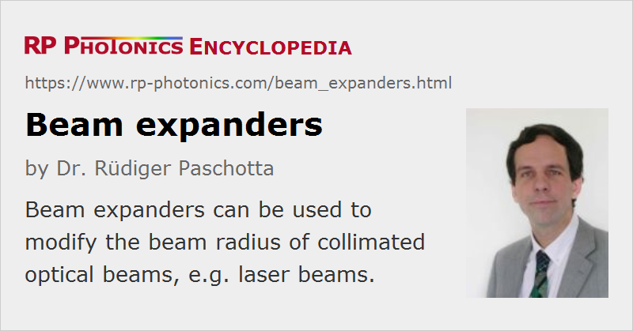

Beam Expanders
Definition: optical devices for modifying the beam radius of a collimated beam
German: Strahlaufweiter, Teleskop
How to cite the article; suggest additional literature
Author: Dr. Rüdiger Paschotta
In laser technology and general optics, one often works with collimated beams, by definition having a roughly constant beam radius over some length. Sometimes, it is necessary to substantially modify a beam radius, for example in order to achieve a reduced beam divergence for transmitting the beam over a larger distance. For that purpose, beam expanders can be built and are also available as fixed optical components.
In most cases, a beam expander is realized as an optical telescope consisting of two lenses (in rare cases, of two curved mirrors). Two different configurations are common:
- A Keplerian telescope consists of two focusing lenses, where the distance between the two lenses is the sum of their focal lengths. There is then a beam waist between the lenses. The beam radius after that telescope is modified if the tool focal length values are different. For example, a doubled beam radius is achieved if the second lens has twice the focal length of the first one.
- A Galilean telescope consists of a focusing and eight the focusing lens. Again, the distance between the lenses equals the sum of the focal lengths – where however one focal length is negative (that of the defocusing lens). The advantage of this type of telescope is that it can be more compact.
Fig. 1 shows the calculated evolution of beam radius for a Keplerian telescope for a 2 × beam expansion.
For achieving a given magnifying power (expansion ratio, ratio of beam radii), one may use different values of focal length. Most compact solutions are possible with small focal lengths, but there are limitations. In particular, one may then require lenses with very high numerical aperture, if at the same time a large output beam radius is required. Therefore, beam expanders for operation with large beams are tentatively longer.
Of course, a beam expander can also be operated “in reverse”, i.e., as a beam reducer.
Variable Beam Expanders
There are variable beam expanders (zoom expanders), i.e., devices where the magnification can be adjusted in a certain range (e.g. from 2 × to 5 × or from 5 × to 10 ×). Those contain at least three lenses and some fine mechanics to adjust the position of at least one of them.
Beam Expanders for One Direction Only
Using cylindrical lenses, one can realize beam expanders which work in one direction only. For that purpose, one may also use anamorphic prism pairs.
Various Aspects
Inappropriate Input Beams
Beam expanders are generally not designed for use with divergent beams, but only for collimated beams, and only within a certain range of beam radii. Otherwise, one may obtain clipping effects and/or not get a collimated beam out. Obviously, a beam can be collimated over a certain length only if its beam waist is large enough. As an example, Figure 3 shows the evolution of beam radius in the same beam expander is considered in Figure 1, but with a five times smaller initial beam radius. Here, the beams can no longer be considered as collimated beams.
A good familiarity with Gaussian beams is a good basis for understanding the operation of beam expanders and similar devices.
Wavelength Range
For minimum losses of optical power, the lenses are usually equipped with anti-reflection coatings. These, however, work only within a limited wavelength range.
Optical Damage
For application with pulsed lasers, the used lens coatings should also have a sufficiently high optical damage threshold. Further, one should avoid operation with misaligned high-power beams, which could lead to overheating of some parts.
Beam Pointing Angles
When modifying the beam radius, one also modifies the strength of beam pointing deviations. For example, doubling the beam radius implies that angular changes of the output beam are only half as strong as those of the input beam.
Suppliers
The RP Photonics Buyer's Guide contains 48 suppliers for beam expanders. Among them:
Questions and Comments from Users
Here you can submit questions and comments. As far as they get accepted by the author, they will appear above this paragraph together with the author’s answer. The author will decide on acceptance based on certain criteria. Essentially, the issue must be of sufficiently broad interest.
Please do not enter personal data here; we would otherwise delete it soon. (See also our privacy declaration.) If you wish to receive personal feedback or consultancy from the author, please contact him e.g. via e-mail.
By submitting the information, you give your consent to the potential publication of your inputs on our website according to our rules. (If you later retract your consent, we will delete those inputs.) As your inputs are first reviewed by the author, they may be published with some delay.
See also: laser beams, collimated beams, beam radius, magnification, lenses, Gaussian beams, anamorphic prism pairs, telescopes
and other articles in the category general optics
|  |
If you like this page, please share the link with your friends and colleagues, e.g. via social media:
These sharing buttons are implemented in a privacy-friendly way!